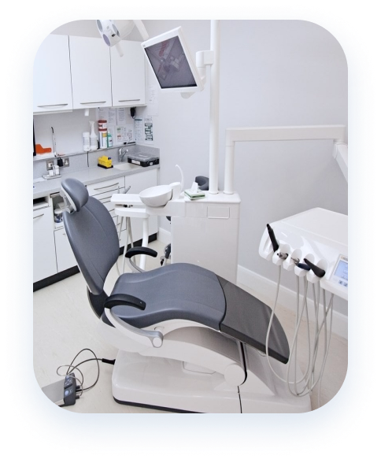
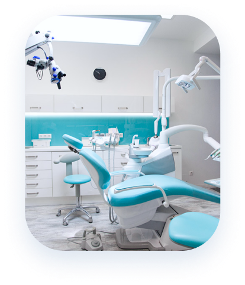

Стоматологічний
кабінет
кабінет
Перший стоматологічний кабінет було створено в 2005 році. Ми намагалися надавати тільки найкращі послуги, що було відразу ж оцінено клієнтами. За декілька років нашої роботи ми накопичили велику базу клієнтів та статус. Незабаром попит на наші послуги дозволив відкрити другу лікарню в іншій частині міста.


Детальна інформація
Звертайтеся до фахівців і знайдіть здорову та білу посмішку! Приймаємо пацієнтів щодня. Детальну інформацію про послуги та їх вартості уточнюйте на сайті чи за телефоном.
ПРО НАС
Коротка інформація про нас
ЧАС ПРИЙОМУ
Наш докладний графік роботи та адреси наших кабінетів

Послуги
Дізнайтеся наші послуги і переконайтеся, як наша робота
Послуги та ціни
Ми постійно стежимо за розвитком ринку стоматології, тому для лікування та підтримки естетики ротової порожнини ми пропонуємо Вам найпередовіші технології та матеріали, а також найновіше обладнання.
Діагностика
Діагностика стоматологічних захворювань — найперший і найважливіший крок до здоров'я вашої ротової порожнини. Щоб вилікувати захворювання, його необхідно грамотно та точно діагностувати.
від 100 гривень
Лікування зубів
Ми застосовуємо сучасне обладнання, технології та матеріали, пропонуємо якісне лікування зубів, ціни на яке вигідно відрізняються порівняно з іншими клініками міста.
від 300 гривень
Лікування ясен
Вас турбує запалення чи кровоточивість ясен? У нашій клініці кваліфіковані стоматологи проведуть повну діагностику та підберуть найефективніший метод лікування.
від 400 гривень
Видалення зуба
Видалення зубів застосовується лише в крайньому випадку, коли лікування за допомогою інших методів неможливе. Ми готові запропонувати безболісну процедуру та застосування найсучаснішої анестезії.
від 400 гривень
Протезування зубів
Сучасне протезування зубів є безболісним і абсолютно безпечним, для нього використовуються спеціальні матеріали, які за кольором і текстурою не відрізняються від природної емалі.
від 400 гривень
Дитяча стоматологія
Систематичне відвідування лікаря допоможе попередити появу небезпечних захворювань, а також підібрати відповідний догляд за ротовою порожниною відповідно до віку.
від 250 гривень
Огляд і консультація є безкоштовними!
У вас залишилися питання чи ви хочете записатися на прийом до стоматолога у Харкові? Зателефонуйте нам!
Наші спеціалісти
Силами кваліфікованих фахівців та сучасного обладнання проводимо лікувальні, відновлювальні та профілактичні процедури будь-якої складності недорого та якісно.

Тагаєва Марія Олексівна
Стоматолог-ортопед, імплантолог вищої категорії
Стаж роботи:22 роки
Освіта:Харківський національний медичний університет

Бойко Наталия Петровна
Ортодонт, спеціаліст по моделюванні усмішки
Стаж роботи:17 рокiв
Освіта:Харківський національний медичний університет

Стоянов Алексей Владимирович
Лікар вищої категорії, хірург-імплантолог
Стаж роботи:17 рокiв
Освіта:Харківський національний медичний університет
4,843
Задоволених клієнтів
19,216
Встановлених пломб
12
Років роботи
2
Кабінета
Відгуки наших пацієнтів
Ви можете звернутися до адміністрації, поставити запитання у межах компетенції медичного персоналу, а також залишити свої побажання та коментарі, скориставшись нашою електронною поштою.